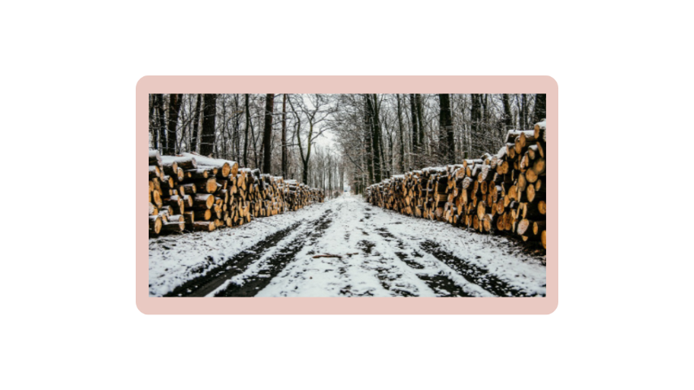
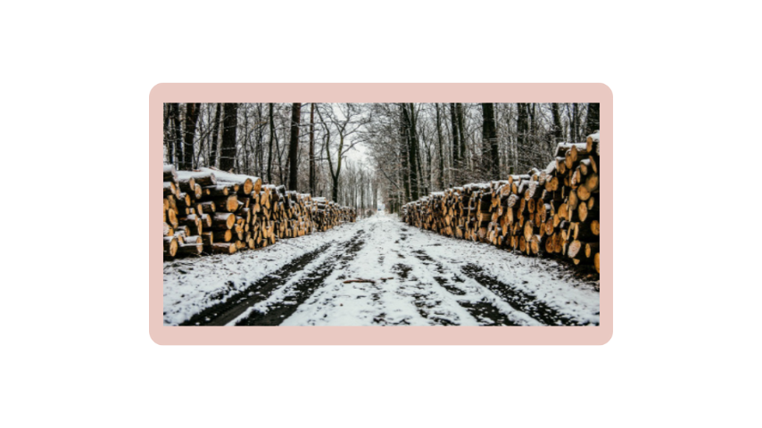
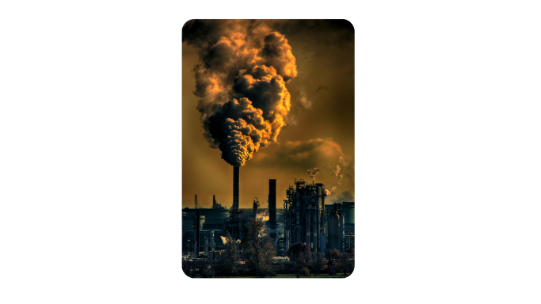

As mudanças climáticas são transformações a longo prazo nos padrões de temperatura e clima. Essas mudanças podem ser naturais, como por meio de variações no ciclo solar. Mas, desde 1800, as atividades humanas têm sido o principal impulsionador das mudanças climáticas, principalmente devido à queima de combustíveis fósseis como carvão, petróleo e gás. A queima de combustíveis fósseis gera emissões de gases de efeito estufa.
Exemplos de emissões de gases de efeito estufa que estão causando mudanças climáticas incluem dióxido de carbono e metano. Isso vem do uso de gasolina para dirigir um carro ou carvão para aquecer um prédio, por exemplo. O desmatamento de terras e florestas também pode liberar dióxido de carbono. Aterros para lixo são uma das principais fontes de emissões de metano. Energia, indústria, transporte, edificações, agricultura e uso da terra estão entre os principais emissores Como resultado, a Terra está agora cerca de 1,1 °C mais quente do que no final do século XIX.
O aumento na concentração dos gases de efeito estufa provoca alteração nas trocas de calor, ficando a maior parte retida na atmosfera. Em consequência, ocorre o aumento da temperatura. É importante destacar que o aumento da emissão de gases de efeito estufa é resultado das atividades humanas. Esse processo iniciou no século XVIII, com a Revolução Industrial e perdura até os dias de hoje.
O efeito estufa apesar de relacionado com o aquecimento global, é um processo que garante que a Terra mantenha a temperatura adequada para a vida. Sem ele, o planeta seria muito frio, a ponto de muitas formas de vida não existirem. O problema está no aumento da emissão de gases poluentes, os chamados gases de efeito estufa
 

As mudanças climáticas não aconteceram de uma hora para outra. A nossa história evolutiva está intrinsecamente ligada às alterações provocadas no clima, as quais são observadas desde a formação do planeta Terra. Ao longo dos 4,6 bilhões de anos do planeta, o clima modificou-se. Houve, nos últimos 400 mil anos, quatro ciclos diferentes, glaciais e interglaciais. Nos últimos 150 anos, no entanto, o planeta teve sua temperatura aumentada de maneira incontrolável. Estudos indicam que a Terra aquece-se cerca de 0,2°C por década (0,2°C a cada 10 anos).
Estudos feitos pela Nasa e pela Noaa (Administração Oceânica e Atmosférica Nacional) mostram que a temperatura registrada na Terra em 2018 foi a quarta mais alta nos últimos 140 anos. Em 2017, a temperatura aumentou cerca de 0,83ºC com base na temperatura média registrada entre os anos de 1951 e 1980. A temperatura média anual mais alta foi registrada no ano de 2016. Mas por que a temperatura aumentou? De acordo com a Organização Meteorológica Mundial, o planeta está mais quente do que no período anterior a industrialização
O cenário mundial após a Revolução Industrial mudou não só economicamente, mas também o modo produtivo, provocando mudanças no cenário ambiental. O consumo exagerado e a produção elevada, além de aumentar a exploração dos recursos naturais, provocaram também o aumento da poluição atmosférica, por causa da emissão gases poluentes pelas indústrias e automóveis. A produção também acelerou o desmatamento, o que também provocou alterações no clima
A Lei nº 6.938, de 31 de agosto de 1981, dispõe sobre a Política Nacional do Meio Ambiente, seus fins e mecanismos de formulação e aplicação, e dá outras providências. A poluição se refere, portanto, a uma modificação ambiental que afeta de maneira desfavorável os seres humanos e também outras formas de vida encontradas naquele local. A poluição é, geralmente, provocada pelo humano e suas atividades. O ser humano provoca poluição ambiental quando suas indústrias, por exemplo, lançam poluentes no ar, quando combustíveis fósseis são queimados, quando realizam queimadas, quando utilizam agrotóxicos na agricultura, entre várias outras situações. Existem diferentes tipos de poluição, sendo algumas: Poluição atmosférica: consiste no lançamento de substâncias que afetam a composição do ar. A queima de combustíveis fósseis, por exemplo, pode levar ao lançamento de várias substâncias no ar.
Poluição hídrica: é provocada por substâncias que entram em contato com o ambiente aquático, causando modificações. Lançamento de esgoto sem devido tratamento, derramamento de petróleo e liberação de mercúrio na água são algumas das situações que provocam poluição hídrica.
Poluição do solo: afeta a camada superficial da crosta terrestre. Agrotóxicos utilizados na agriculta são um exemplo de substâncias que podem provocar esse tipo de poluição. O descarte inadequado do lixo, como o lixo depositado em lixões, também pode provocar a poluição do solo.
Poluição sonora: caracteriza-se pelo excesso de ruídos. Esses ruídos podem ser causados pelo trânsito, máquinas, shows musicais e festas, por exemplo. Esse excesso pode desencadear estresse, dificuldade de concentração, dores de cabeça, dificuldades para dormir e problemas auditivos.
Este quiz abordará os principais discutidos em nosso site, e será uma ótima oportunidade para você verificar o quanto aprendeu sobre a ecologia e as mudanças climáticas. Será que você consegue responder corretamente a todas as perguntas? Vamos descobrir!